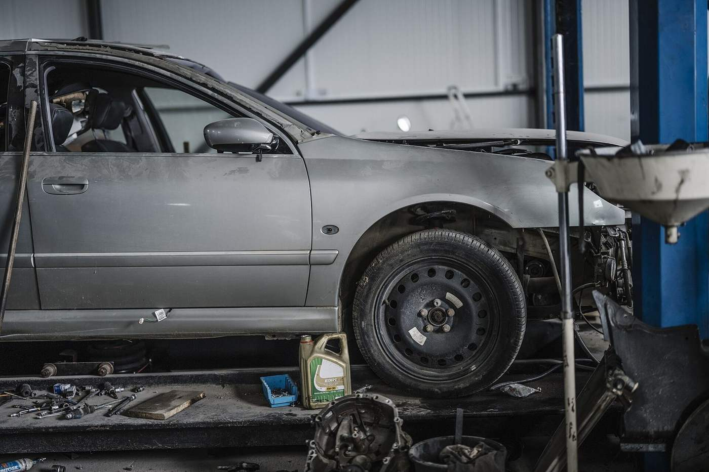
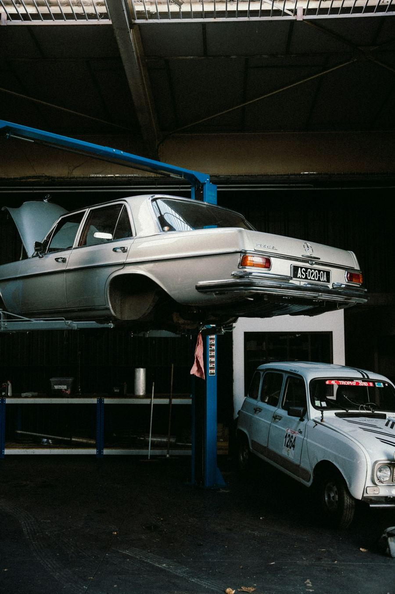

Honest, prompt auto repair from Rodney Brown at your home, work, or wherever you broke down.
Codes and wiring traced fast.
Brake repair on site.
Starters, wiring, screens.
Pumps, belts and more.
Recharge and repair.
Oil, plugs and fluids.

Rodney is a mobile mechanic known for showing up fast, even on a Sunday night, and charging less than the dealership.

“There's a reason Rodney has better reviews than all of the mechanics in town. He provides honest, prompt work and as professional as they come.”
“Broke down in Waco on a Sunday night… CALL RODNEY RIGHT NOW! He showed up in 30 mins completely ready to solve our problem.”
“Ford was going to charge twice as much and would have taken much longer.”
Mobile Mechanic Services is at 2405 J J Flewellen Rd, Waco, TX 76704.
Mon – Thu: 8:00 AM – 6:00 PM; Friday: 9:00 AM – 6:00 PM; Saturday: 9:00 AM – 4:00 PM; Sunday: Closed.
Engine Diagnostics, Brakes, Battery & Electrical, Steering & Suspension, Auto A/C, Oil & Maintenance.
Call (254) 733-7634 to describe the problem and set up a time.
It is rated 4.9 stars from 494 Google reviews. With nearly 500 reviews, customers say he's honest, prompt and affordable.
2405 J J Flewellen Rd, Waco, TX 76704
Mon – Thu 8:00 AM – 6:00 PM · Friday 9:00 AM – 6:00 PM · Saturday 9:00 AM – 4:00 PM · Sunday Closed
📞 Call (254) 733-7634